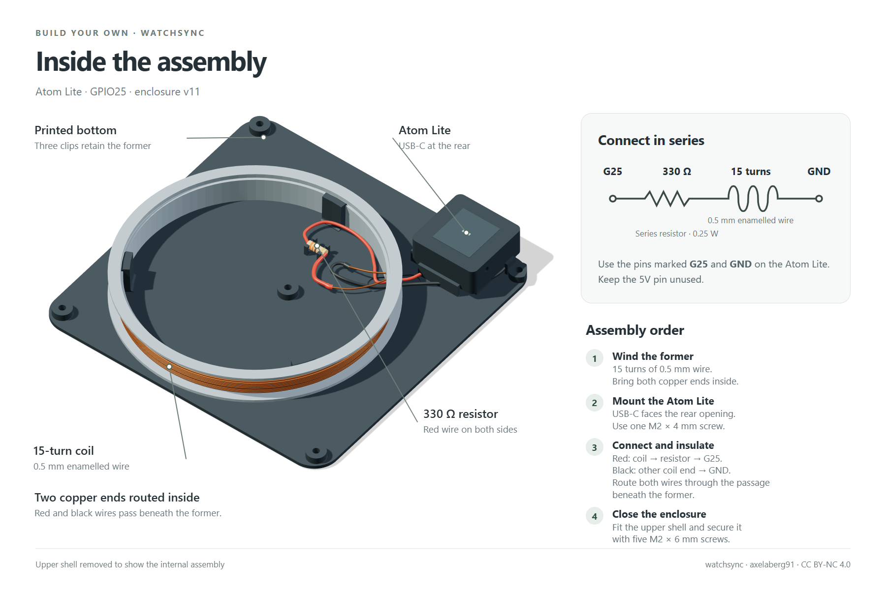
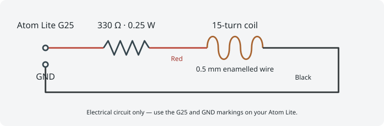

Watchsync guide
Build your own
Parts, printable files, wiring and firmware installation for a complete Watchsync build.
Before you start
This guide builds Watchsync around the classic M5Stack Atom Lite (ESP32-PICO-D4), firmware 1.12.1. AtomS3 and other ESP32 families require adaptation and are not covered by this build.
Prefer a finished unit? Register your interest in a ready-built Watchsync.
Assembly overview


Parts and tools
| Item | Quantity / specification |
|---|---|
| M5Stack Atom Lite | 1 classic ESP32 model, not AtomS3 |
| USB-C cable and supply | 1 data-capable cable for installation, suitable USB power supply |
| Enamelled copper wire | 0.5 mm; allow about 4.5 m for 15 turns on the 82 mm former, including connection leads |
| Series resistor | 330 Ω, 0.25 W, axial |
| Female jumper leads | 2, red and black, with complete single-pin Dupont housings for G25 and GND |
| Case screws | 5 × M2 × 6 mm ISO 4762 socket-head |
| Atom mounting screw | 1 × M2 × 4 mm ISO 4762 socket-head |
| Heat-shrink tubing | For the resistor and solder joints |
| Printed parts | v14 bottom plate, upper shell and coil former |
You also need a soldering iron, solder, wire cutters, a way to strip enamel, a 1.5 mm hex key and a multimeter. A Prusa CORE One with PLA and a 0.4 mm nozzle is the reference printing setup; check settings for your printer.
1. Download and print
Download the three ready-to-print STL files. The bottom plate is v14; the upper shell and coil former are unchanged:
Use 0.20 mm first and subsequent layers. Files are supplied in print orientation: bottom underside down, shell exterior roof down, and former lower flange down.
The case is 110 × 110 × 15.2 mm; the former has an 82 mm winding core and 88 mm outer flange. Inspect the integral button, retaining clips and bridge around the rear Atom opening in the slicer.
The bottom plate’s 50.9 mm QR code links to these guides. For contrasting recessed code and lettering, use opaque light PLA for layers at Z=0.20 and 0.40 mm, then change to opaque dark PLA before the Z=0.60 mm layer. Engraving is 0.4 mm deep. Adjust the change if you use other layer heights, and test scanning on the actual print.
2. Wind the coil
- Leave a connection lead and wind 15 turns of 0.5 mm enamelled wire around the former. Spread the turns neatly over the winding area; use another layer as needed.
- Bring both copper ends inside through the former’s wire exit, leaving enough length for the insulated cable joints.
- Remove enamel completely at both ends and tin the exposed copper. Join one end to red insulated wire and the other to black insulated wire. Cover each joint with heat-shrink tubing and check continuity with a multimeter.
3. Connect the electronics

- With USB disconnected, connect the first coil end using red wire → 330 Ω resistor → red wire → G25 (GPIO25). Connect the other coil end using black wire → GND.
- Insulate solder joints and resistor leads. Keep bare conductors from touching the Atom, screws or each other.
- Use the actual G25 and GND markings. Leave the 5V pin unused by this coil circuit. Do not connect the coil directly across the supply.
- Check the completed series circuit and check for accidental shorts before connecting USB.
4. Assemble the enclosure
- Fit the cased Atom Lite on the bottom plate with the M2 × 4 screw. Its USB rear face aligns with the rear shell opening. Check the actual safe mounting depth before tightening.
- Connect the G25/GND jumper housings. The plain support sits beneath them; check their actual fit.
- Place the insulated resistor at its saddle. Route both the red and black wires side by side through the short passage beneath the former’s existing wire exit. Keep the wires and their joints separate in the centre; do not route either wire through the former wall or across its rim.
- Fit the wound former to its three retaining clips. Keep leads clear of the clips, button and screw posts.
- Lower the shell over the assembly. Check button movement and the open LED slot.
- Install the five M2 × 6 case screws from underneath and tighten gently by hand. Do not force mismatched parts.
5. Build and install firmware over USB
- Download the firmware source and extract it. Open
code/watchsync/watchsync.inoin Arduino IDE. - In Arduino IDE, open Preferences and add this address under Additional Boards Manager URLs:
Open Boards Manager and install M5Stack by M5Stack official 3.3.10.https://static-cdn.m5stack.com/resource/arduino/package_m5stack_index.json - Select M5Stack → M5Atom, 4 MB flash and Minimal SPIFFS (1.9MB APP with OTA/190KB SPIFFS).
- Connect the Atom with a USB data cable and select its port. Set Erase All Flash Before Sketch Upload → Enabled, then click Upload.
- After upload, the device starts its setup network. Continue with Connect and test below.
6. Connect and test
- Join setup Wi-Fi watchsync, password
watchsync, and open http://192.168.4.1. - Select your 2.4 GHz network and choose a hostname. Rejoin the normal network after setup and open the chosen
http://<hostname>.localaddress, or use the device IP. - For a DCF77 watch, check DCF77, Central Europe and automatic daylight saving. Confirm that Device details reports GPIO25.
- Wait for confirmed internet time and a whole-minute boundary. Use Always on or a schedule covering the watch’s overnight reception times. A one-hour pass is available for an immediate test.
- Place the watch directly on Watchsync overnight with automatic radio reception enabled. Match the broadcast schedule to the watch’s reception times and check the result in the morning. For an immediate test, start manual reception. Range is limited; try turning or moving the watch slightly if necessary.
A transmitting status does not confirm watch reception. See the quick start, manual and troubleshooting guide for everyday controls.
7. Later updates and recovery
For future updates, download the firmware from Updates and upload it through Firmware update on the device page. Your settings are kept.
Record your settings before layout changes or recovery. OTA requires an existing second application slot. USB remains the recovery path if the device cannot start or is unreachable.
Licensing and support
Original code, designs and documentation by axelaberg91 use CC BY-NC 4.0. Upstream credits and separate third-party terms are retained. The inherited firmware’s license remains unresolved; this publication does not relicense it or settle redistribution rights. Read the full licensing notice.
For questions about a build, use the support form.